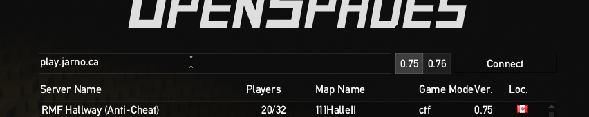

OpenSpades
Mix between a first person shooter and Minecraft. Build defence structures, dig many tunnels or go on the offensive.

Getting the game
Tips
- On joining, you will be asked to choose a team and a weapon. If you change your mind during play, press L to get back to that selection screen.
- Use the scroll wheel to cycle between your weapons, the shovel and the block. The shovel can destroy blocks, the block can build walls
- If you want to see a bigger map, press N. Press N again to make the map go away again.
Connecting
When you start the game you will immediately enter the server browser. If you click on "Setup" at the bottom of the screen, you can set your in-game name. Click on "Back" to return to the server browser.
To connect to the server, type DOMAINNAME in the input field at the top and click on the "Connect" button to the right.
